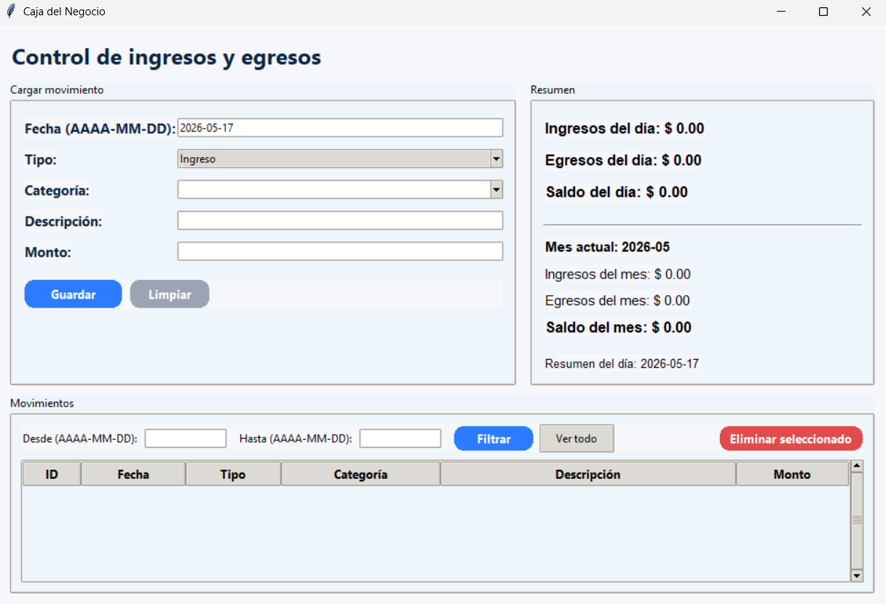

Control de Caja
Aplicación simple orientada a pequeños negocios para registrar ingresos, egresos, métodos de pago y obtener un resumen claro del dinero del turno.
Resumen
¿Qué problema resuelve?
El objetivo del proyecto es reemplazar registros manuales de caja por una herramienta simple que permita controlar movimientos diarios de dinero.
Funcionalidades principales
- Registro de ingresos del turno.
- Registro de egresos o retiros de caja.
- Diferenciación de métodos de pago.
- Resumen general del dinero registrado.
- Interfaz simple pensada para uso diario.
Enfoque técnico
El proyecto está pensado como una aplicación de escritorio liviana, construida con Python y una interfaz gráfica simple. La información se almacena localmente para permitir consultas y control del movimiento diario.
Captura
Vista del proyecto
Captura de la interfaz utilizada para registrar y consultar movimientos de caja.

Control diario de caja
Proyecto orientado a negocios pequeños que necesitan una herramienta simple para registrar movimientos y visualizar el estado del turno.
Mejoras futuras
Roadmap
Posibles mejoras para convertir esta herramienta en una aplicación más completa.
Próximas funcionalidades
- Exportación de reportes diarios en PDF o Excel.
- Filtros por fecha, método de pago y tipo de movimiento.
- Dashboard con estadísticas básicas.
- Backup automático de la base de datos.
Aprendizajes
Este proyecto me permitió practicar la construcción de interfaces simples, el manejo de datos persistentes y la lógica necesaria para resolver una necesidad concreta de control administrativo.